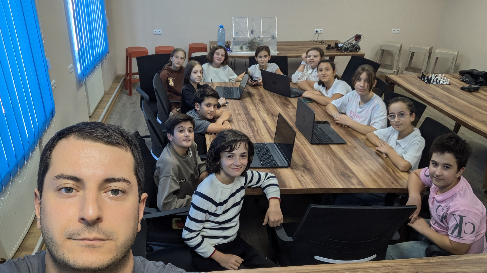

შეამოწმე წყარო
ვინ ავრცელებს ინფორმაციას და რას ეყრდნობა?
ინოვაციების ინკუბატორები / პროექტი 09
როგორ ვებრძოლოთ დეზინფორმაციას
მედიაწიგნიერების პროექტი — ინფორმაციის წყაროს გადამოწმება, ვიზუალური მანიპულაციის ამოცნობა და კრიტიკული აზროვნება.

პროექტის შესახებ
პროექტი მოსწავლეებს ინფორმაციის გააზრებულად შეფასებასა და დეზინფორმაციის ამოცნობაში ეხმარება. VI კლასისთვის მომზადებული სასწავლო მასალა მოიცავს ყალბ ამბებს, შეცდომაში შემყვან სათაურებს, კონტექსტიდან ამოღებულ ციტატებსა და ვიზუალურ მანიპულაციას.
გზამკვლევში ყურადღება ეთმობა ინფორმაციის ავტორისა და წყაროს შემოწმებას, დამოუკიდებელი წყაროების შედარებასა და გამოსახულების წარმომავლობის ძიებას. ცალკე თემაა ხელოვნური ინტელექტით შექმნილი ან შეცვლილი ფოტო-ვიდეომასალა.
პროექტის არქივი მოიცავს სამუშაო ჩანაწერებსა და ვიდეოს „როგორ ვებრძოლოთ დეზინფორმაციას“. ქვემოთ წარმოდგენილია მონაწილეთა ჯგუფის რეალური ფოტო და ვიდეომასალა.
ვინ ავრცელებს ინფორმაციას და რას ეყრდნობა?
რას ამბობენ სხვა დამოუკიდებელი წყაროები?
ხომ არ არის სათაური, ფოტო ან ვიდეო კონტექსტიდან ამოღებული?
პროექტის მასალები